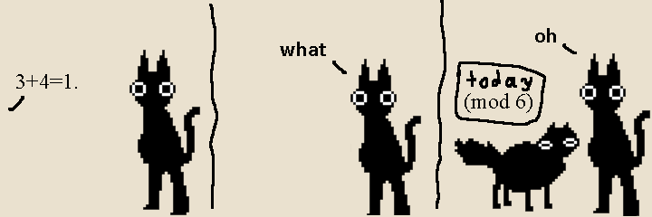
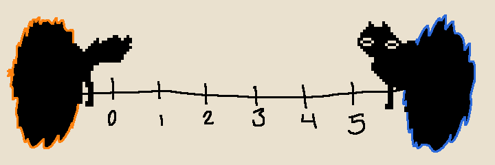

Picking Flowers in Finite Fields (1)#

There is a type of “mathematcial world” in the area of math known as abstract algebra called a finite field. While I was exploring ways to visualize their structure, I stumbled on a procedure that generated these fascinating images:
[images of graphs]
This is a casual exploration of what these structures are and how these patterns emerge from them. In the future, I might upload a more rigorous/formal discussion, but the purpose of this piece is just to introduce the concepts necessary to generate these pictures, expecting no more than a couple years of high school math background.
Modular Arithmetic#
Modular arithmetic is a world of whole-number mathematics where numbers are just treated as remainders of division.
{kind=link}
In this world, we choose a modulus (in this case, the choice is 6) and treat every number as equal to its remainder when divided by the modulus. For example, we now say that \(3 = 9 = 15\), because when divided by \(6\), they all have the same remainder \(3\).
Essentially, we have just declared that in our new world, \(6 = 0\). Here are some examples of what strange statements are true in this world (the symbol \(\pmod{6}\) indicates we are in this new world):
\(3 + 4 = 1 \pmod{6}\), since the remainder of 7 when divided by 6 is 1
\(4 = 10 = 16 \pmod{6}\), since adding 6 is like adding 0
\(4 \cdot 2 = 2 \pmod{6}\), since \( 8 = 6 + 2\), and \(6\) is \(0\)
By declaring this new rule, we have essentially created with a world with only the 6 numbers \(\{0, 1, 2, 3, 4, 5\}\). I like to imagine this as twirling the line of integers into a coil and flattening it into a circle.

Alternatively, you could think of this as a short integer line with portals on each side.
{kind=link}
In each picture, it’s not too hard to see why \(3+4 = 1\):
in the first picture, if you start at \(3\) and take \(4\) steps around the circle, you end up at \(1\)
in the second picture, if you start at \(3\) and take \(4\) steps right, you end up at \(1\).
Multiplication still works in this world, but weird things are true, like
Does division work in this world? Division is just undoing multiplication, (this is the slogan “division is the same as multiplying by the reciprocal” from elementary school,) so to divide by say, \(4\), we would need to find a reciprocal of \(4\), an integer \(x\) such that
so that multiplying by \(4\) and then \(x\) has the same effect as not multiplying at all (multiplying by \(1\)).
It turns out that finding such an \(x\) in this case is impossible. The reason is that the left-hand side of the above equation \(4x\) is always an even number, but numbers that equal to \(1 \pmod 6\) are \(1\) more than a multiple of \(6\), hence odd.
However, if we chose a better modulus, we could have division in our new world:
[table of inverses mod 3]
A structure like this where we can add, subtract, multiply, and divide (by anything nonzero) is called a “field” by mathematicians.
Since the field we just made has only 3 numbers, it is finite in size and called a “finite field”. It turns out (for some relatively ordinary number theory reasons) that doing integer arithmetic with a prime number as a modulus always creates a field.
The real numbers are a familiar field, as well as the rational numbers, though these are not finite. The integers are not a field, since for example, \(1/2\) is not an integer, meaning we can’t divide by 2 while staying in the world of integers.
Modular Polynomial Arithmetic#
We can move to the larger world of polynomials mod 3. Polynomials here are expressions consisting of a sum of terms of form \(ax^k\), where \(a\) comes from our world of numbers mod 3, and \(x^k\) is some power of the unkown variable \(x\).
Some exploration of what is true here:
\( 4x^2 + 3x^2 = x^2\), since \(4 + 3 = 7 = 1 \pmod 3\)
\((3x + 2) + (2x + 4) = 2x\), since \(5x = 2x\), and \(2 + 4 = 6 = 0 \pmod 3\)
This is no longer a field (note it’s impossible to divide by \(x\) here). However, we can play the same trick of simply declaring a polynomial to be zero that we played before (when we said \(6=0\)). Let’s say that \((x^2 + 1) = 0\). This rule \((x^2 + 1) = 0\) immediately tells us that \(x^2 = -1 = 2\) in our new world, which gives us a way to reduce polynomials of degree 2 or higher down to degree-1 polynomials, for example,
Since there are only \(3 \cdot 3 = 9\) possible degree 1 or 0 polynomials, this is a finite world, which we can visualize as this square with portals around it:
[portal square]
Addition and subtraction in this world works the same as it usually would with polynomials, just with the reduction by dividing by 3 (represented by moving through the portals). In the picture, adding \(1\) corresponds to a step right, and adding \(x\) corresponds to a step up.
[addition example]
Multiplication is almost the same, but we have to reduce higher powers of \(x\) as we did above, for example:
It turns out that the resulting world is a field (this is a consequence of the fact that our modulus \((x^2 + 1)\) is irreducible, the polynomial version of being prime!). For example, the previous computation showed that \((x+1)\) and \((x+2)\) are inverses of each other.
An important result in finite field theory is that the multiplicative elements of a finite field are generated by a single element, i.e. there is an element \(g\) such that every nonzero member of the field is equal to some power of \(g\). In our example, we can take \(g = (x + 1)\), since (using the arithmetic rules of our new world)
This list of values is called the cycle generated by \((x+1)\) in our field, and cycles like these are the key to generating the shapes from the introduction.
Growing the Flowers#
You could plot the progression of the previous cycle in the square, but it looks a bit random:
[random things around the square]
However, the fun happens when we instead tile the plain with our little 3x3 world, and at each step, let the plot snap to the nearest point which corresponds to the next multiplication result:
[ninja star construction]
Construcing worlds with larger primes leads to different shapes:
[swans image]
Using a computer to draw these pictures for larger primes leads to these incredibly detailed shapes, which look chaotic at a small scale, but have nice symmetry as an entire shape.
[lots of images]
The code I used to generate these is linked HERE. REPL!!! Feel free to mess with it if that’s your type of thing.
As mentioned in the introduction, I may upload a more technical discussion of why these shapes have the symmetry they have, but for now, this seems like a good place to stop.
[the end]